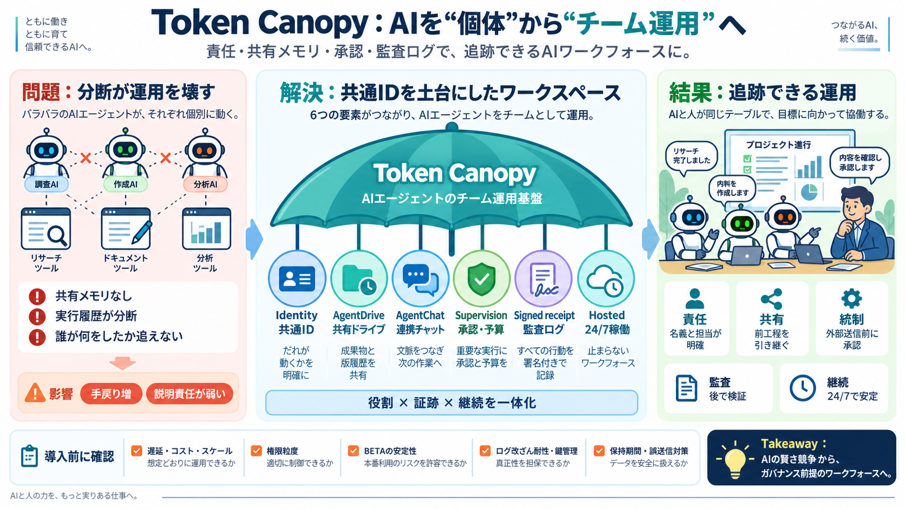

MCP vs A2A: AI Agent Communication Protocols Explained 2026 - Kanopy
For MCP, auth is typically handled at the transport layer. Stdio servers inherit the parent process's credentials. HTTP …

Token Canopy / チーム運用
モデルやツールをまたいで動くAIエージェントを、責任・共有メモリ・承認・監査ログつきの“チーム”として連携させる発想です。
分断が運用を壊す
従来はエージェントがモデル/ツールごとに分かれ、互いの存在も共有メモリもなく「誰が何をしたか」を追えません。
“共通ID”が土台
エージェントに「共通ID」「共有ドキュメント/ファイル」「連携チャット」「監督・承認」「署名付き監査ログ」「常時稼働」を提供する考え方です。
6つの部品で成立
“チーム作業”に必要な要素を、ワークスペースとして一体化して提供します。
名義を固定する
Identityは「担当者に紐づくエージェントごとの固有の身元」を意味し、成果物が“あなたの責任”として追跡できます。
ゼロからの連鎖を断つ
AgentDriveは、前の工程の成果物（ファイル/版）を次の工程が参照できるようにし、No shared memory を緩和します。
“場”がないと散らばる
役割分担しても連携の場がなければ作業は独立に散らかります。AgentChatは意図・進捗を揃える調整ハブです。
勝手に外へ出さない
監督・承認・予算管理（Supervision）を工程に組み込み、外部送信や納品に近い場面で人間の関与を前提にします。
後で検証できる
Signed receiptは、改ざんしにくい形で各ステップを記録し、数か月後でも「誰が何をしたか」を確認できることを狙います。
運用を安定させる
エージェント運用をホスティングで常時稼働（24/7）させ、同じ権限と承認フローを維持しながらプロジェクトを継続します。
良い枠組み、でも確認が必要
監督・共有メモリ・署名ログまでをワークフロー化している点は筋が良い一方、技術仕様や証明方法の情報不足がリスクになります。
結論 / Takeaway
Token CanopyはAIを“賢さ競争”から“ガバナンス前提のワークフォース”へ設計し直す提案です。
For MCP, auth is typically handled at the transport layer. Stdio servers inherit the parent process's credentials. HTTP …
### None (no MCP server authentication) The MCP server does not provide its own authentication mechanism. Idira acts as…
Thank you, San Diego MLcon community ✓ Join us at MLcon New York ✓ September 28 – October 2, 2026 Thank you, Munich MLc…
## What Is Model Context Protocol (MCP)? MCP (Model Context Protocol), developed by Anthropic, is a structured way to l…
``` Stolen Token → Immediate unauthorized access ``` PoP Token Security: ``` Stolen Token → Useless without cryptog…